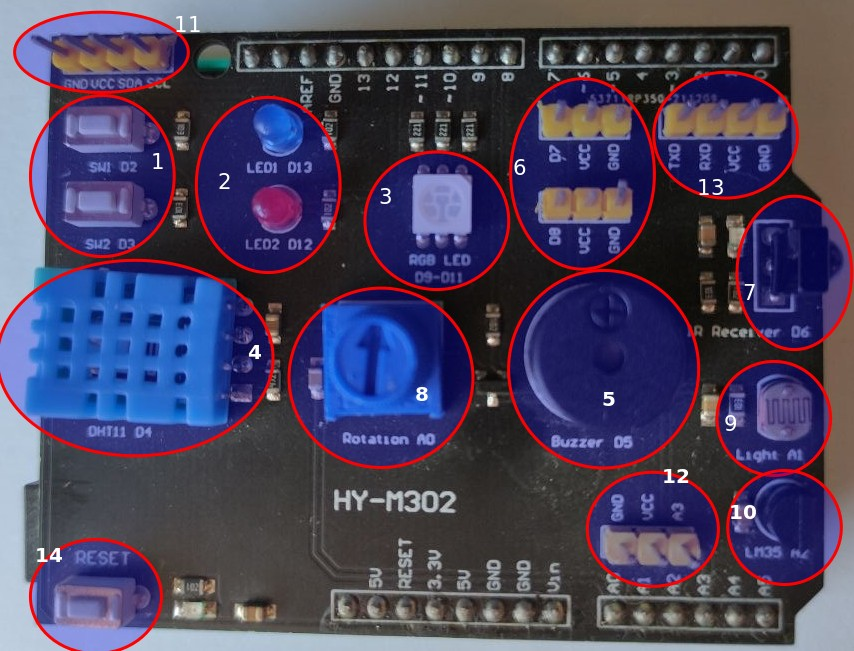

En arduino UNO hay una serie de pines que son entradas analógicas (A0, A1, A2, A3, A4, y A5), esto quiere decir que miden magnitudes que pueden tener infinitos valores, como temperatura (sensor NTC), luz (sensor LDR), posición (potenciómetro), etc. Como no podemos adjudicar en Arduino a una variable infinitos valores lo hace entre valores entre 0 y 1023 (1024 valores, almacenados en 10 bits).
En el Shield tenemos disponibles las siguientes entradas analógicas:
| Sensor/Actuador/Módulo | Pin de conexión | |
| 8 | Módulo potenciómetro giratorio | A0 |
| 9 | Sensor de luminosidad (LDR) | A1 |
| 10 | Sensor de temperatura (LM 35) | A2 |
| 11 | Interface I2C compatible con sensores y módulos Keyestudio |
SDA-A4 SCL-A5 |
| 12 | Puerto entrada analógico | A3 |